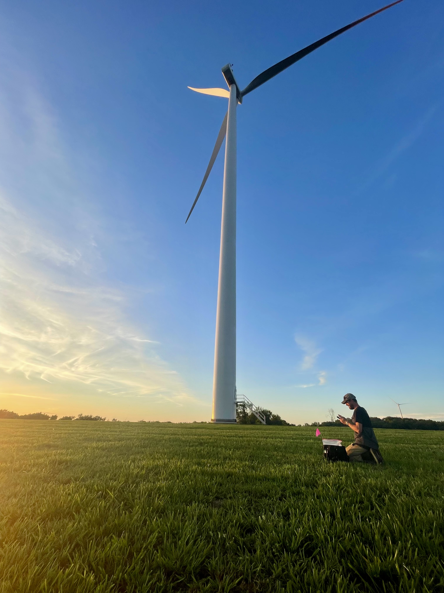
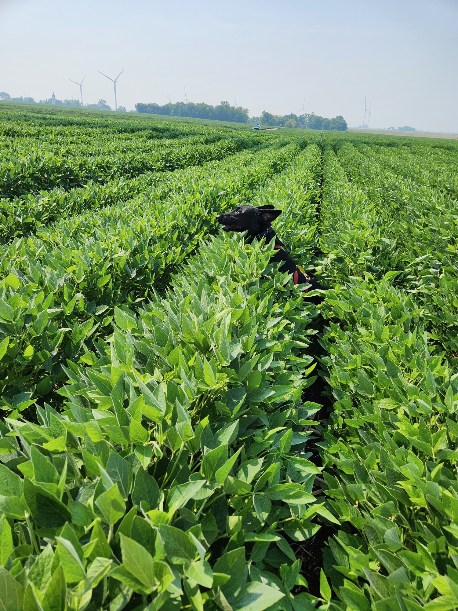
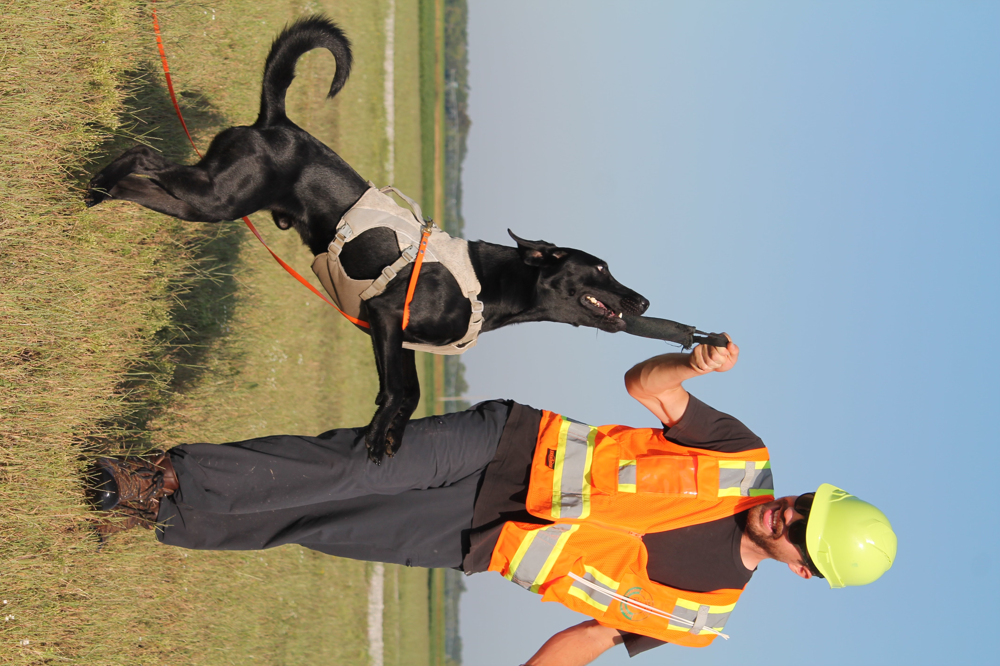

I found GIS as a career path while doing conservation detection work with my black lab, Templeton. We worked for an environmental consulting firm, locating bird and bat mortalities at wind energy facilities.
In addition to the many ways I used GIS for field work, I worked with the company’s GIS team in the off seasons, gaining technical proficiency in QGIS. I fell in love with how GIS lives at an intersection of science, art, and communication.


